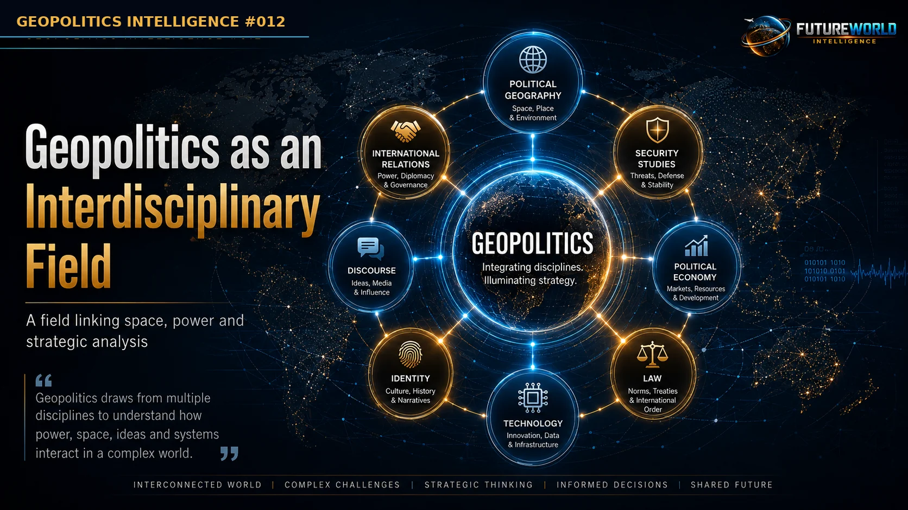
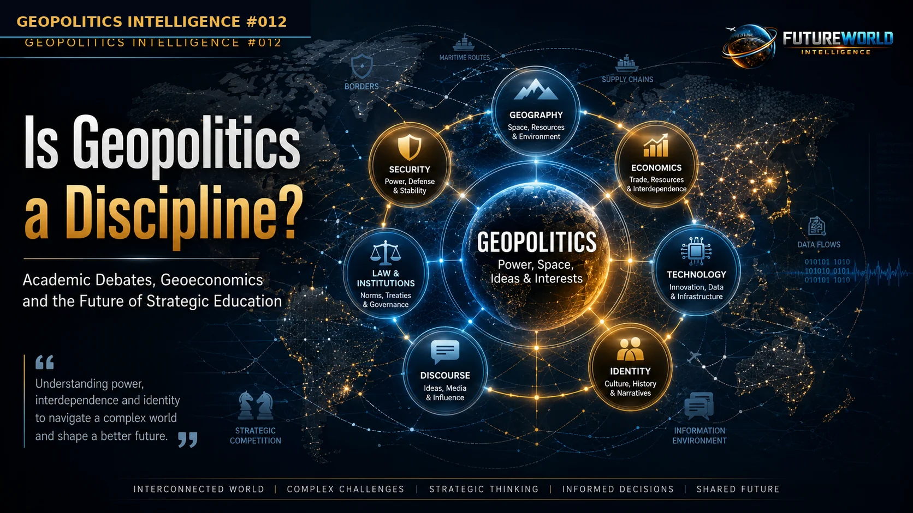
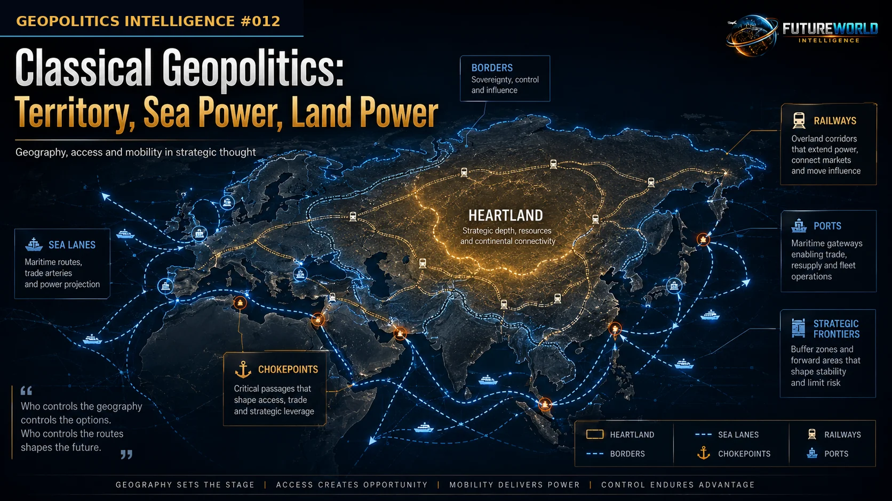
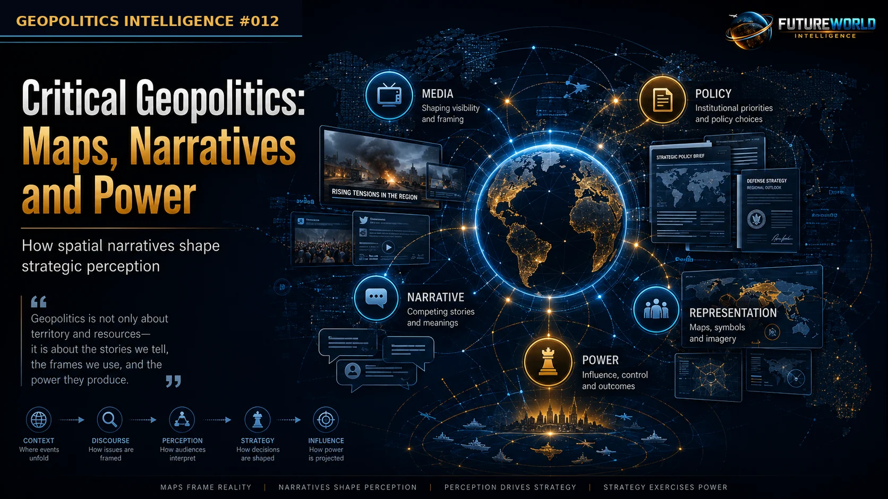
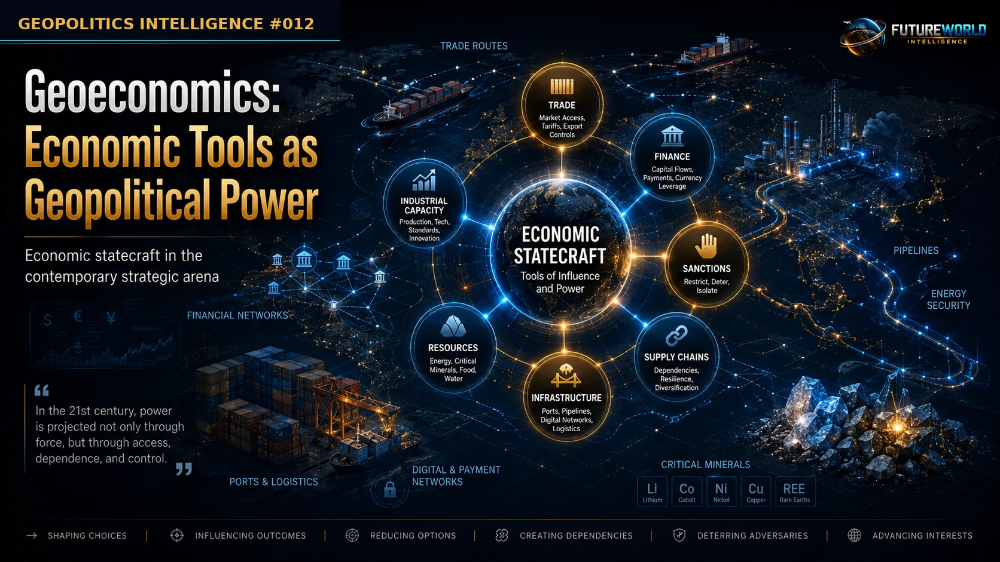
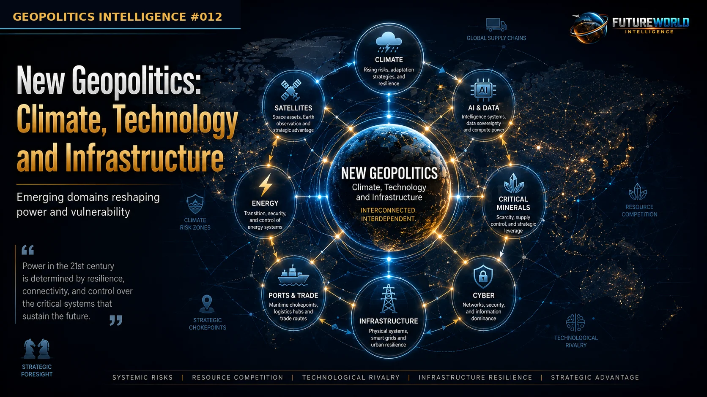
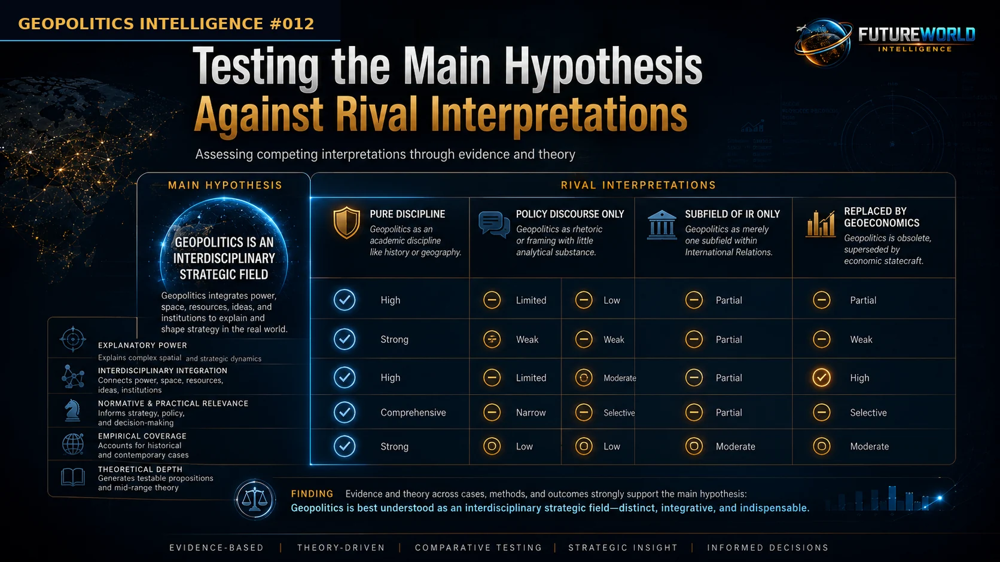
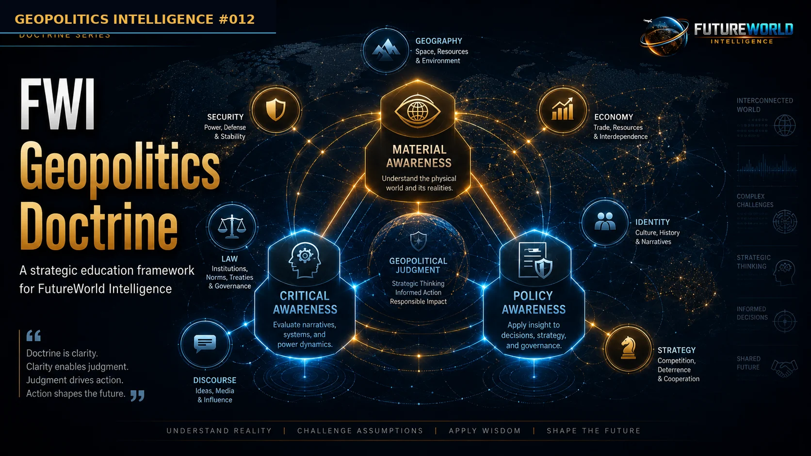

FWI publication information
Identity, scope and status
- Publication family
- Research and Strategic Analysis
- Publication type
- FWI Evidence Review / Conceptual Research Report
- Domain
- Geopolitics Intelligence
- Series and number
- Geopolitics Intelligence #011
- Institutional author
- FutureWorld Intelligence
- Publication year
- Not recorded
- Current web edition
- 1.0
- Metadata updated
- 15 July 2026
- Purpose
- Resolve a contested conceptual and disciplinary question through literature-based analysis
- Intended audience
- Researchers, students, policy readers and strategic educators
- Method and evidence basis
- Qualitative desk research, structured literature review, conceptual analysis and rival-interpretation testing
- Evidence cut-off
- The exact historical evidence cut-off was not recorded when the original web publication was prepared. Source currency will be confirmed during retrospective validation.
- Limitations and disclosures
- Classification and metadata do not independently validate substantive claims. Citation, factual, originality, AI-use, rights and conflict-of-interest checks remain part of the pending retrospective validation.
Validation note: This classification does not itself validate the publication. Retrospective factual, citation, originality, disclosure and readiness checks must be completed and human-approved before the status can change to “Validated — human approved.”
FutureWorld Intelligence. (n.d.). Is Geopolitics a Discipline? (Geopolitics Intelligence #011; Web edition 1.0). https://futureworldintelligence.org/content/geopolitics/is-geopolitics-a-discipline/
Executive Brief

Geopolitics is one of the most widely used concepts in contemporary international affairs, but it remains one of the most contested. Policymakers, journalists, military analysts, diplomats, political geographers, international-relations scholars and think tanks all use the term, but they often mean different things by it.
For classical geopolitical thinkers, geopolitics meant the study of how geography, territory, sea power, land power, resources and transport routes shape the power of states. For realist international-relations thinkers, geopolitics often means power competition among states. For critical geographers, geopolitics is not only about territory; it is also about discourse, maps, narratives, threat construction and the politics of knowledge. For geoeconomics writers, geopolitics now includes trade, sanctions, infrastructure, finance, resources, technology and supply chains as instruments of strategic competition.
This report argues that geopolitics should not be treated as a closed science or a fully settled academic discipline. It is better understood as a disciplined interdisciplinary field and strategic educational lens connecting political geography, international relations, security studies, history, law, political economy, technology, identity and discourse.
The central finding is:
Geopolitics is the interdisciplinary study of how geography, power, security, economics, technology, law, identity and discourse interact to shape world affairs. It is not a closed science, but a disciplined strategic field connecting political geography, international relations, security studies and political economy.
Geoeconomics should be placed inside this wider framework:
Geoeconomics is the study of how economic tools, trade networks, finance, resources, infrastructure, sanctions and supply chains are used as instruments of geopolitical power.
1. Research Question

The central research question is:
Is geopolitics a settled academic discipline, a subfield of political geography or International Relations, a policy discourse, or a disciplined interdisciplinary field — and where does geoeconomics fit within it?
This question matters because geopolitics is now used to explain wars, maritime chokepoints, energy security, trade corridors, sanctions, critical minerals, cyber power, climate security, migration, technological competition and world order. If the concept is not clearly defined, it risks becoming a loose media label. If it is treated too rigidly, it risks becoming deterministic and politically dangerous.
2. Methodology
This report uses a qualitative, desk-based research design based on structured literature review, conceptual analysis, disciplinary-boundary analysis and rival-interpretation testing.
The study does not attempt to measure geopolitics statistically. It examines the academic status of geopolitics through literature, concepts, historical development, disciplinary location and policy relevance.
The literature is organized into six clusters:
Classical geopolitics
Postwar decline and revival
Geopolitics and International Relations
Critical geopolitics
Geoeconomics and geopolitical economy
Geopolitics as strategic education
The report evaluates the literature through five criteria:
Object of study — Does geopolitics have a clear subject?
Theoretical tradition — Does it have major thinkers, texts and schools?
Methodological identity — Does it have agreed methods?
Institutional presence — Does it have journals, courses, readers and research communities?
Policy relevance — Does it shape real-world strategic analysis?
The report advances one main hypothesis and tests it against four rival interpretations.
3. Main Hypothesis
Main Hypothesis
Geopolitics is best understood not as a closed or fully settled academic discipline, but as a disciplined interdisciplinary field and strategic educational lens that connects geography, power, security, economics, technology, law, identity and discourse in the study of world affairs.
This hypothesis is tested against four rival interpretations:
Geopolitics is a settled discipline.
Geopolitics is only a subfield of political geography or International Relations.
Geopolitics is mainly policy discourse.
Geoeconomics has replaced geopolitics.
The report finds that each rival interpretation explains part of geopolitics, but none explains the full literature as well as the interdisciplinary-field hypothesis.
4. Literature Review
4.1 Classical Geopolitics: Geography, Empire and Strategic Space

Classical geopolitics emerged in the late nineteenth and early twentieth centuries, when imperial powers were competing over territory, sea routes, colonies, railways, resources and global influence. Its major thinkers included Alfred Mahan, Friedrich Ratzel, Rudolf Kjellén, Halford Mackinder, Karl Haushofer and later Nicholas Spykman.
Mackinder’s 1904 essay “The Geographical Pivot of History” remains one of the foundational texts. Mackinder argued that the age of geographical exploration was ending and that geography had to move toward “intensive survey and philosophic synthesis.” He also described the emerging twentieth-century world as a “closed political system,” meaning that future power competition would occur inside a bounded and increasingly interdependent global order rather than through unlimited territorial expansion.
This idea is central to geopolitics. Mackinder was not simply describing land; he was describing a new global political condition: the world had become connected, bounded and strategically interdependent. In later interpretation, Ó Tuathail, Dalby and Routledge’s edited volume explains that Mackinder’s address became important for three reasons: its global view, its division of the world into large strategic zones, and its sweeping account of geography’s conditioning influence on history and politics.
However, classical geopolitics also had serious limitations. It often converted complex societies into simplified strategic spaces: heartlands, rimlands, pivots, crescents, sea powers and land powers. In Ó Tuathail, Dalby and Routledge’s assessment, Mackinder’s argument rests on the relationship between physical geography and transportation technology, particularly the way railways were transforming the conditions of land power in Eurasia.
The classical tradition therefore provides the first foundation of geopolitics, but it also reveals its danger: the temptation to treat maps as destiny. For this report, classical geopolitics should be used as a starting point, not as a closed doctrine.
4.2 The Problem of Definition
The term “Geopolitics” has a long and varied twentieth-century history. It was originally coined by Rudolf Kjellén in 1899, later associated with imperial knowledge, then with German Geopolitik, then with Cold War superpower rivalry, and later revived as a way to interpret post-Cold War global power.
The literature repeatedly shows that geopolitics is difficult to define. Gökmen’s thesis presents geopolitics as a way of seeing the world, rooted in both history and geography, and standing at the intersection of political geography and International Relations. It also records that geopolitics is used as an intellectual tradition, an expression of state interest and an expression of identity politics.
Ó Tuathail, Dalby and Routledge’s edited volume states that coming up with a specific definition of geopolitics is “notoriously difficult,” because the term changes across historical periods and structures of world order. The same source argues that geopolitics is best understood in its “historical and discursive context of use.”
Mamadouh and Dijkink make a similar point when they describe geopolitics as a “contentious concept.” In their account, geography and foreign-policy studies often use the same term differently: in geography, geopolitics often refers to critical approaches to foreign-policy representations, while in foreign-policy studies it often refers to realist power politics.
This definitional instability is one reason why geopolitics should not be treated as a closed science. Its meaning changes across historical periods, academic traditions and policy contexts. This does not make geopolitics useless; rather, it supports the report’s main hypothesis that geopolitics is best understood as a disciplined interdisciplinary field.
4.3 Postwar Decline and Revival
One of the most important reasons geopolitics became academically suspicious after World War II was its association with German Geopolitik, Lebensraum and Nazi-era strategic thought. Mamadouh and Dijkink explain that the problem for geopolitics as an academic concept was not merely that it entered politics, but that it was connected to German Geopolitik of the 1930s and tainted by association with Nazism. They also note that, after World War II, many geographers tried to demonstrate the neutrality of geography and political geography.
Gökmen’s thesis reaches a similar conclusion from the International Relations side. It observes that geopolitics and IR emerged in overlapping historical periods, but geopolitics was later erased from much academic literature because of its close association with Nazism, even while realist thinking became dominant in IR after World War II.
This is a major finding: geopolitics did not disappear because geography stopped mattering. It declined because the term became politically contaminated. Strategic geographical reasoning continued under other labels: realism, containment, security studies, area studies, grand strategy and foreign-policy analysis.
This postwar decline shows why geopolitics cannot be understood only as an academic discipline. It also has a political history, and that political history shaped how universities, policymakers and scholars treated the term.
4.4 Geopolitics and International Relations
The relationship between geopolitics and International Relations is central to this report. Gökmen’s thesis directly argues for an “intrinsic relation” between traditional geopolitics and the development of International Relations in both theory and practice. It seeks to identify the geopolitical assumptions that helped make IR theory realist and asks why IR theory books often omit traditional and critical geopolitics despite their relevance.
Gökmen’s argument is especially useful because it does not merely claim that geopolitics is related to IR; it argues that mainstream IR theory cannot be properly understood without addressing the geopolitical theories that helped shape its realist assumptions. The thesis also argues that ignoring geopolitics produces both poor historical understanding and weak theoretical analysis.
Mamadouh and Dijkink explain the disciplinary problem clearly. In geography, geopolitics is often used to examine foreign-policy practices, representations and discourses; in foreign-policy studies, it often refers to conservative or realist views of international relations.
This explains why the concept is confusing. Geopolitics has one meaning in political geography, another in strategic studies, another in journalism, and another in IR realism. Yet all of these meanings revolve around the same central concern: how space, power and world order interact.
4.5 Critical Geopolitics: Discourse, Maps and Power

Critical geopolitics is one of the most important developments in the field because it corrects the determinism and state-centrism of classical geopolitics. Instead of treating geography as a neutral and automatic cause of state behavior, critical geopolitics asks how geography is represented, narrated, mapped and used by power.
Mamadouh and Dijkink note that much recent work in geography deals with “discourses, codes, visions, representations, narratives” and other concepts connected to the importance of language in geopolitical practice. They identify three political dimensions of geopolitics: the political character of geopolitical knowledge, disciplinary boundary-making, and the politics of discursive struggles.
Ó Tuathail, Dalby and Routledge’s edited volume makes the point even more directly. It states that critical geopolitics seeks to reveal the hidden politics of geopolitical knowledge. Rather than treating geopolitics as a neutral description of the world political map, it treats geopolitics as a politically varied way of describing, representing and writing about geography and international politics.
This does not mean material geography is irrelevant. It means geography becomes politically powerful through interpretation. A mountain, river, strait, desert, port or border matters materially, but its meaning is shaped by institutions, strategy, history, maps and narratives.
Critical geopolitics therefore strengthens rather than weakens serious geopolitical education. It warns students and policymakers not to confuse maps with reality, slogans with analysis, or national narratives with neutral truth.
4.6 Formal, Practical and Popular Geopolitics
The literature also shows that geopolitics operates at multiple levels. Critical geopolitics often distinguishes between formal geopolitics, practical geopolitics and popular geopolitics.
Formal geopolitics refers to academics, strategists, advisers, think tanks and intellectuals. Practical geopolitics refers to policymakers, diplomats, military planners and state decision-makers. Popular geopolitics refers to media, films, cartoons, public narratives, school maps and everyday political imagination.
Mamadouh and Dijkink’s discussion of geopolitical discourse includes exactly this kind of literature, covering geopolitical codes, popular representations, practical geopolitical reasoning, popular culture, films, magazines and public narratives.
This is important for strategic education because geopolitics is not only produced in universities. It is also produced in presidential speeches, military doctrines, textbooks, television maps, social media, newspapers and intelligence briefings. This makes geopolitics powerful, but also vulnerable to misuse.
For policy-level education, the implication is clear: geopolitics must be taught not only as strategic geography, but also as public reasoning, media literacy and discourse awareness.
4.7 Geoeconomics and Geopolitical Economy

The question of geoeconomics is central to the modern relevance of geopolitics. Edward Luttwak’s 1990 argument, “From Geopolitics to Geo-Economics,” suggested that after the Cold War, economic competition would increasingly replace military-territorial competition. Ó Tuathail, Dalby and Routledge’s edited volume includes Luttwak’s work inside its section on New World Order geopolitics, showing that geoeconomics emerged from within geopolitical debate rather than outside it.
But the same edited volume also criticizes the idea that geopolitics and geoeconomics are opposites. It argues that Cold War geopolitics was already tied to geoeconomics, military-industrial systems and political economy, and concludes that geopolitics and geoeconomics are “concepts entwined in each other.”
Kurečić’s 2015 article is more useful here as a conceptual bridge than as a bibliographic correction. Its title directly links “Geoeconomic and Geopolitical Conflicts” with the wider “Geopolitical Economy,” placing economic conflict inside the same power system as territorial and strategic competition.
For FutureWorld Intelligence, the implication is clear: geoeconomics is not merely about markets. It explains how states and blocs use trade, finance, resources, infrastructure, sanctions, energy corridors, logistics and supply chains as instruments of strategic influence. Kurečić’s work therefore supports the report’s central argument that geoeconomics should be treated as a modern subfield of geopolitics, not as a replacement for it.
Modern geoeconomic research also supports the importance of this field. Góes and Bekkers study how persistent geopolitical conflicts can affect trade, technological innovation and economic growth; their model explores a hypothetical global decoupling scenario in which technology systems diverge into geopolitical blocs.
Therefore, geoeconomics should not be treated as a replacement for geopolitics. It should be treated as a major modern subfield. Trade, sanctions, finance, infrastructure, ports, pipelines, minerals, technology controls and supply chains are economic instruments, but they operate through geography and power.
4.8 Environmental, Technological and New Geopolitics

Modern geopolitics is no longer limited to land power, sea power, military control, territorial conquest or great-power borders. The literature already shows this expansion. Ó Tuathail, Dalby and Routledge’s edited volume treats geopolitics as a field that moved from imperialist geopolitics and Cold War geopolitics into New World Order geopolitics, environmental geopolitics and anti-geopolitics. Its contents explicitly include geoeconomics, environmental scarcity, global warming, political economy, social movements and resistance to dominant geopolitical practice.
The same volume also states that the post-Cold War world contains “many competing visions” of a new geopolitics, including geoeconomics, transnational security problems, environmental degradation, resource depletion and global warming. This means the expansion of geopolitics is not an artificial addition to the report; it is already present in the academic literature.
Climate and environmental geopolitics
Climate change has become geopolitical because it affects food security, water security, displacement, infrastructure, disaster risk, urban stability and development capacity. The IPCC Sixth Assessment Synthesis Report states that human-caused climate change is already affecting weather and climate extremes in every region, producing widespread adverse impacts and losses to nature and people. The same report estimates that approximately 3.3 to 3.6 billion people live in contexts highly vulnerable to climate change and notes that climate and weather extremes are increasingly driving displacement in several regions.
This evidence supports the claim that environmental geopolitics is not a secondary issue. It is connected to food systems, water availability, population movement, infrastructure resilience, public health and state capacity. Climate change does not automatically cause conflict, but it can intensify existing vulnerabilities, expose weak governance systems and create new pressures on development and security policy.
Maritime chokepoints and supply-chain geopolitics
Global infrastructure has also become a geopolitical field. UNCTAD’s Review of Maritime Transport 2024 is explicitly framed around “Navigating maritime chokepoints.” UNCTAD reports that food security, energy supplies and the global economy are at risk as the Suez Canal, Panama Canal and Red Sea face growing pressure from geopolitical tensions and climate change; in 2023, ship transits through these canals dropped by about half, forcing costly rerouting around Africa’s Cape of Good Hope. UNCTAD’s Secretary-General describes resilient maritime transport and future-proofed supply chains as a “strategic necessity.”
This makes maritime transport a clear example of modern geopolitics. A security shock in the Red Sea, a climate-linked water constraint in the Panama Canal, or a conflict affecting Black Sea routes can disrupt global trade, raise shipping costs, affect food and energy markets, and expose the vulnerability of global supply chains.
Critical minerals and energy-transition geopolitics
Energy transition has also created new geopolitical dependencies. The International Energy Agency reports that demand for critical minerals grew strongly in 2023, with lithium demand rising by 30% and demand for nickel, cobalt, graphite and rare earth elements rising by 8% to 15%; clean-energy applications have become the main driver of demand growth for several critical minerals.
The geopolitical issue is not only demand; it is concentration. The IEA reports that, between now and 2030, around 70–75% of projected supply growth for refined lithium, nickel, cobalt and rare earth elements is expected to come from today’s top three producers. For battery-grade spherical and synthetic graphite, almost 95% of projected growth is expected to come from China. The IEA warns that such concentration makes supply chains and routes more vulnerable to disruption from extreme weather, trade disputes or geopolitics.
This supports the report’s argument that modern geopolitics includes resources, industrial capacity, processing networks, clean-energy supply chains and technology manufacturing. The politics of energy transition is therefore not only climate policy; it is also industrial strategy, trade strategy and security policy.
Technological and digital geopolitics
Technology has also moved from the civilian economy into the core of strategic competition. NATO identifies artificial intelligence, autonomous systems and quantum technologies as emerging and disruptive technologies that are changing the world and the way NATO operates. NATO further states that these technologies present both risks and opportunities and that the Alliance is working with public and private sector partners, academia and civil society to develop and adopt new technologies.
NATO’s priority technology areas include artificial intelligence, autonomous systems, quantum technologies, biotechnology and human enhancement technologies, space, hypersonic systems, novel materials and manufacturing, energy and propulsion, and next-generation communications networks. NATO also links these technologies to dual-use applications, innovation ecosystems, technological edge and protection from interference or manipulation by adversaries and competitors.
This shows that technological power is no longer only about weapons. It is also about standards, data, dual-use innovation, industrial ecosystems, cyber resilience, space systems, supply chains and control over next-generation infrastructure.
Taken together, climate vulnerability, maritime chokepoints, critical minerals and emerging technologies show that the modern field of geopolitics has expanded beyond classical land/sea power. It now includes climate and environmental risk; food, water and energy security; maritime chokepoints and logistics corridors; critical minerals and industrial supply chains; digital infrastructure, AI, cyber, space and dual-use technologies; and narratives, identity, discourse and public legitimacy.
The modern field is therefore not classical geopolitics alone. It is a wider strategic field for understanding how power works across territory, economy, ecology, technology, infrastructure, identity and discourse. This directly supports the report’s main hypothesis: geopolitics is best understood as a disciplined interdisciplinary field, not a closed science or a narrow military doctrine.
4.9 Literature Review Synthesis
The reviewed literature supports a balanced conclusion. Classical geopolitics provides a serious intellectual tradition, but it carries risks of determinism, imperial thinking and map-based simplification. Critical geopolitics corrects this by exposing the politics of maps, language, representations and geopolitical knowledge. International Relations supplies the study of power, security and world order, but often fails to fully examine its geographical assumptions. Geoeconomics expands the field by showing how trade, finance, sanctions, infrastructure and supply chains operate as instruments of power. Environmental and technological geopolitics further demonstrate that the field now includes climate risk, energy transition, critical minerals, AI, cyber, space and digital infrastructure.
The strongest literature-based finding is therefore:
Geopolitics is academically serious but not disciplinarily settled. It is best understood as a disciplined interdisciplinary field and strategic educational lens connecting geography, power, security, economics, technology, law, identity and discourse in the study of world affairs.
5. Testing the Main Hypothesis Against Rival Interpretations

5.1 Testing Procedure
This report tests the main hypothesis through a rival-interpretation method. Instead of simply asserting that geopolitics is an interdisciplinary field, the report compares that hypothesis against four competing interpretations found in the literature.
The main hypothesis is:
Geopolitics is best understood not as a closed or fully settled academic discipline, but as a disciplined interdisciplinary field and strategic educational lens connecting geography, power, security, economics, technology, law, identity and discourse in the study of world affairs.
Each rival interpretation is tested through five criteria:
Object of study: Does the interpretation identify what geopolitics studies?
Theoretical tradition: Does it account for major texts, thinkers and schools?
Methodological coherence: Does it explain how geopolitics produces knowledge?
Institutional location: Does it explain where geopolitics sits academically?
Policy relevance: Does it explain how geopolitics operates in real-world strategy?
A rival interpretation is accepted only if it explains the evidence better than the main hypothesis. If it explains only part of the evidence, it is treated as partially valid but insufficient.
5.2 Rival Interpretation 1: Geopolitics Is a Settled Academic Discipline
Proposition
This interpretation argues that geopolitics is a mature academic discipline with its own theories, methods, institutions, journals and teaching identity.
Expected Evidence if True
If geopolitics were a fully settled discipline, the literature should show:
a relatively stable definition;
a recognized disciplinary home;
a coherent methodology;
clear separation from adjacent fields;
a settled canon of theories and methods;
consistent academic use of the term.
Evidence Supporting the Interpretation
There is meaningful evidence in favor of this interpretation. Geopolitics has a long intellectual genealogy beginning with classical thinkers such as Ratzel, Kjellén, Mahan, Mackinder, Haushofer and Spykman. Mackinder’s 1904 Geographical Pivot of History provides one of the clearest early examples of geopolitical theory, linking geography, world history, transport technology, land power and global political order. Mackinder argued that the age of exploration was ending and that the world had become a closed political system in which geographical and strategic relationships could be analyzed as a whole.
The existence of Ó Tuathail, Dalby and Routledge’s edited volume also supports the claim that geopolitics has a recognizable academic tradition. The volume organizes the field into imperialist geopolitics, Cold War geopolitics, New World Order geopolitics, environmental geopolitics and anti-geopolitics, showing that geopolitics has historical phases, major texts and identifiable schools of debate.
Evidence Against the Interpretation
The interpretation fails when tested against definitional and methodological stability. The edited volume states that defining geopolitics is “notoriously difficult” because its meaning changes with historical periods and structures of world order. It also argues that geopolitics is best understood in its historical and discursive context of use, not as a fixed scientific category.
Gökmen’s thesis reaches a similar conclusion from the side of International Relations. It describes geopolitics as a slippery concept, overused and misused across different audiences, and states that there is no consensus on a single definition. It also places geopolitics at the intersection of political geography and International Relations rather than inside one settled disciplinary home.
Mamadouh and Dijkink also weaken the settled-discipline interpretation. They describe geopolitics as a contentious concept and show that it has different meanings in geography and foreign-policy studies: in geography it often refers to critical studies of foreign-policy representations, while in foreign-policy studies it often refers to realist power politics.
Evaluation
This rival interpretation explains the existence of a serious geopolitical literature, but it does not explain why the field remains definitionally unstable, methodologically diverse and institutionally divided. It accounts for the academic seriousness of geopolitics but not its disciplinary ambiguity.
Finding
Rejected as a full explanation. Partially valid only.
Geopolitics has a strong intellectual tradition, but the evidence does not support treating it as a fully settled academic discipline.
5.3 Rival Interpretation 2: Geopolitics Is Only a Subfield of Political Geography or International Relations
Proposition
This interpretation argues that geopolitics should be treated mainly as a subfield of political geography or, alternatively, as a strategic concept inside International Relations.
Expected Evidence if True
If this interpretation were sufficient, the literature should show that geopolitics can be fully explained by one parent field, either political geography or International Relations. It should also show that the core questions of geopolitics do not require a wider interdisciplinary framework.
Evidence Supporting the Interpretation
There is partial support for this view. Geopolitics clearly has roots in political geography because it studies territory, borders, location, spatial power, regions, strategic routes and state-space relationships. It also clearly belongs to International Relations because it deals with power, conflict, statecraft, alliances, security and world order.
Gökmen’s thesis strongly supports the connection between geopolitics and IR. It argues for an intrinsic relationship between traditional geopolitics and the development of International Relations in both theory and practice. It also states that the purpose of the study is to identify the geopolitical assumptions that helped make IR theory realist.
Mamadouh and Dijkink also support the existence of a disciplinary overlap by directly discussing the boundary-making problem between geopolitics, political geography and International Relations.
Evidence Against the Interpretation
The interpretation becomes too narrow when tested against the actual scope of geopolitical literature. Geopolitics cannot be fully contained within political geography because it also includes grand strategy, military planning, foreign-policy doctrine, sanctions, intelligence, maritime security, technology competition, energy systems and economic statecraft.
It also cannot be fully contained within International Relations because IR often neglects the spatial imagination, maps, territorial representations and discursive construction of regions that critical geopolitics studies. Mamadouh and Dijkink explicitly note that geopolitics has a blurred identity because geography and IR use the term differently.
Gökmen’s thesis is particularly important here. Its central question asks why IR theory books do not contain chapters on traditional and critical geopolitics, and why they should. This means geopolitics is related to IR, but also insufficiently captured by mainstream IR.
Evaluation
This rival interpretation explains why geopolitics belongs partly to political geography and partly to IR, but it fails to explain why the field also extends into security studies, political economy, law, technology, environmental studies, media studies and strategic education.
Finding
Rejected as a full explanation. Partially valid only.
Geopolitics is not merely a subfield. It is better understood as an interdisciplinary field with strong roots in political geography and International Relations.
5.4 Rival Interpretation 3: Geopolitics Is Mainly Policy Discourse
Proposition
This interpretation argues that geopolitics is mainly a discourse used by states, media, think tanks, strategists and intellectuals to represent threats, define regions, justify policies and organize public understanding of world politics.
Expected Evidence if True
If this interpretation were sufficient, the literature should show that geopolitics is primarily about language, representation, maps, narratives, identity and power/knowledge. It should also show that material geography is less important than how geography is described and politically used.
Evidence Supporting the Interpretation
Critical geopolitics strongly supports this interpretation. Mamadouh and Dijkink state that much work in geopolitics deals with discourses, codes, visions, representations and narratives, especially the importance of language in geopolitical practice. They also identify three political dimensions of geopolitics: the political character of geopolitical knowledge, disciplinary boundary-making, and discursive struggles.
Ó Tuathail, Dalby and Routledge’s edited volume also supports this view by treating geopolitics as power/knowledge rather than neutral description. It argues that critical geopolitics reveals the hidden politics of geopolitical knowledge and treats geopolitics as a way of describing, representing and writing about geography and international politics.
This interpretation also explains why formal, practical and popular geopolitics matter. Academic experts, policymakers, media outlets, films, maps and public narratives all shape how societies imagine threats, allies, enemies, regions and strategic priorities.
Evidence Against the Interpretation
The weakness is that it risks reducing geopolitics to language alone. Material geography still matters. Mackinder’s original work may be criticized for determinism, but it correctly recognized that geography, transport, mobility, resources and strategic location shape political possibilities. In his discussion, Mackinder states that political power depends on geographical conditions, both economic and strategic, as well as population, equipment and organization.
This means geography is not merely invented by discourse. Ports, rivers, mountains, chokepoints, energy routes, supply chains, military bases and industrial corridors have material effects. However, their political meaning is still interpreted through narratives, maps and strategy.
Evaluation
This rival interpretation explains the critical and discursive dimension of geopolitics very well. It is essential for preventing deterministic, propagandistic or map-worship approaches. But it cannot alone explain why geography, infrastructure, resources and strategic location continue to shape world politics.
Finding
Accepted as a major component, rejected as a complete explanation.
Geopolitics is partly policy discourse, but not only policy discourse. It is best understood as the interaction of material geography and political representation.
5.5 Rival Interpretation 4: Geoeconomics Has Replaced Geopolitics
Proposition
This interpretation argues that after the Cold War, military-territorial geopolitics was replaced by economic competition, making geoeconomics the dominant framework for world politics.
Expected Evidence if True
If geoeconomics had replaced geopolitics, the literature should show that territorial strategy, military geography, security competition and spatial power have become secondary, while trade, finance and economic competition now explain the structure of world affairs independently of geopolitics.
Evidence Supporting the Interpretation
There is partial support for the rise of geoeconomics. Luttwak’s argument, reproduced in Ó Tuathail, Dalby and Routledge’s edited volume, claimed that with the waning of the Cold War, interstate conflict would increasingly become geoeconomic rather than geopolitical. This reflected the post-Cold War view that trade, industrial competition, markets and economic rivalry were becoming central instruments of state power.
This interpretation has become even more relevant in the twenty-first century because sanctions, export controls, supply chains, strategic infrastructure, energy markets, critical minerals and technological standards now function as instruments of state power.
Evidence Against the Interpretation
The replacement claim fails when tested against the literature. The edited volume directly criticizes Luttwak’s separation between geopolitics and geoeconomics, arguing that the transition thesis is too simple. It states that Cold War geopolitics was already tied to geoeconomics through militarism, Pax Americana and military-industrial structures. It concludes that geopolitics and geoeconomics are not opposites but concepts entwined with each other.
This is decisive for the report. Economic power does not float above geography. Trade networks require maritime routes, ports, canals, railways, pipelines, digital infrastructure, minerals, industrial zones and secure logistics corridors. Sanctions, finance and supply chains are geoeconomic instruments, but they operate through geopolitical space.
Evaluation
This rival interpretation correctly identifies the growing importance of economic tools in strategic competition. However, it fails if it treats geoeconomics as a replacement for geopolitics. The evidence supports a different conclusion: geoeconomics is a subfield within geopolitics and international political economy.
Finding
Rejected as replacement. Accepted as subfield.
Geoeconomics has not replaced geopolitics. It has expanded the geopolitical field by adding economic instruments of power to classical territorial and strategic concerns.
5.6 Comparative Test Matrix
| Test Criterion | Settled Discipline | Subfield of Geography / IR | Mainly Policy Discourse | Geoeconomics Replaces Geopolitics | Main Hypothesis: Interdisciplinary Field |
|---|---|---|---|---|---|
| Explains object of study | Partial | Partial | Partial | Partial | Strong |
| Explains theoretical tradition | Strong | Partial | Partial | Partial | Strong |
| Explains methodological diversity | Weak | Weak | Partial | Weak | Strong |
| Explains institutional ambiguity | Weak | Partial | Partial | Weak | Strong |
| Explains material geography | Strong | Strong | Weak | Partial | Strong |
| Explains discourse and representation | Weak | Partial | Strong | Weak | Strong |
| Explains geoeconomics | Weak | Partial | Partial | Partial | Strong |
| Explains policy relevance | Strong | Strong | Strong | Strong | Strong |
| Overall result | Partly valid but overstated | Partly valid but narrow | Major component but incomplete | Subfield, not replacement | Best-supported interpretation |
5.7 Final Test Result
The rival-interpretation test confirms that the main hypothesis explains the literature better than any single rival interpretation.
The evidence shows that geopolitics has enough theory, history and institutional presence to be academically serious, but not enough definitional stability to be treated as a closed discipline. It is rooted in political geography and International Relations, but not contained by either. It is deeply discursive, but not merely discourse. It has been transformed by geoeconomics, but not replaced by it.
The strongest conclusion is therefore:
Geopolitics is a disciplined interdisciplinary field and strategic educational lens. It studies how geography, power, security, economics, technology, law, identity and discourse interact to shape world affairs.
6. Final Finding
The evidence supports the main hypothesis.
Geopolitics is best understood as a disciplined interdisciplinary field and strategic educational lens. It is not a closed science and not a fully settled discipline, but it is far more than a media slogan or policy buzzword.
It has:
a recognizable intellectual history;
foundational theorists and classical texts;
links to political geography and IR;
critical methods for studying maps, discourse and power;
relevance to security, law, economy, infrastructure, climate and technology;
strong public and policy influence;
growing importance through geoeconomics and strategic education.
The best working definition is therefore:
Geopolitics is the interdisciplinary study of how geography, power, security, economics, technology, law, identity and discourse interact to shape world affairs. It is not a closed science, but a disciplined strategic field connecting political geography, international relations, security studies and political economy.
And the best definition of geoeconomics is:
Geoeconomics is the study of how economic tools, trade networks, finance, resources, infrastructure, sanctions and supply chains are used as instruments of geopolitical power.
7. Implications for Strategic Education
Geopolitics should be taught as a form of strategic literacy. Students, policymakers and citizens need to understand how geography and power interact, but they also need to understand how maps, narratives and threat labels can be used politically.
A serious geopolitics curriculum should include:
Classical geopolitics — land power, sea power, heartland, rimland, chokepoints, borders and resources.
International Relations theory — realism, liberalism, constructivism, world-systems theory and critical theory.
Critical geopolitics — discourse, maps, representations, identity, media and power/knowledge.
Geoeconomics — trade, finance, sanctions, supply chains, infrastructure, ports, technology and industrial policy.
Environmental and climate geopolitics — water, food, energy, migration, disaster risk and ecological security.
Technology geopolitics — semiconductors, AI, cyber power, data infrastructure, satellites and digital sovereignty.
Ethics and responsibility — avoiding determinism, racism, propaganda, civilizational stereotyping and map-based simplification.
This is why geopolitics belongs inside FutureWorld Intelligence. It is not only a subject of power. It is a method for teaching disciplined global awareness.
8. Policy Implications
8.1 For Policymakers
Policymakers should use geopolitics as an analytical lens, not as a deterministic doctrine. Geography matters, but geography does not decide outcomes alone. Institutions, technology, leadership, economy, law, identity and public legitimacy also shape world affairs.
8.2 For Universities
Universities should not leave geopolitics fragmented between political geography, IR, security studies and political economy. A dedicated interdisciplinary geopolitics module can help students understand the relationship between spatial power, discourse, economic systems and world order.
8.3 For Think Tanks and Intelligence Platforms
Think tanks should avoid using geopolitics as a dramatic label for every international issue. Geopolitical analysis should be method-based, source-grounded and conceptually clear.
8.4 For Public Education
Public-facing geopolitics should not become sensational map commentary. It should teach citizens how to read power, geography, economy, identity and media narratives critically.
9. FutureWorld Intelligence Doctrine

Geopolitics is not map worship. It is not destiny. It is not propaganda. It is the disciplined study of how space, power, economy, technology, law, identity and discourse interact to shape world affairs.
FutureWorld Intelligence treats geopolitics as a strategic education field built on three principles:
Material awareness — geography, territory, routes, resources and infrastructure matter.
Critical awareness — maps, narratives, identities and threat labels are politically constructed.
Policy awareness — geopolitical analysis must help decision-makers understand risk, opportunity, stability and long-term change.
This doctrine allows FutureWorld Intelligence to avoid both extremes: deterministic classical geopolitics and purely discursive analysis that ignores material power.
10. Conclusion
Geopolitics is academically serious, historically influential and strategically necessary, but it is not a closed science. It does not have one single theory, one method or one institutional home. Its identity is contested because it sits between political geography, International Relations, security studies, political economy, history, law, media studies and strategic practice.
The literature shows that classical geopolitics gave the field its first strategic grammar of territory, transport, sea power, land power and world order. Postwar suspicion weakened the academic legitimacy of geopolitics because of its association with German Geopolitik and Nazi expansionism. Critical geopolitics later revived the field by showing that geopolitical knowledge is not neutral: maps, regions, threats and national interests are created through discourse, institutions and power. Geoeconomics then expanded the field by showing that trade, finance, infrastructure, sanctions, technology and supply chains are now central instruments of strategic competition.
The final conclusion is:
Geopolitics is a disciplined interdisciplinary field and strategic educational lens. It is not a settled science, but it is a necessary field for understanding world power. Geoeconomics is not its replacement; it is one of its most important modern subfields.
This position is academically balanced, policy-relevant and suitable for FutureWorld Intelligence’s educational mission.
Evidence and source lineage
This conceptual report synthesizes peer-reviewed scholarship and academic reference works. The linked records below identify key sources used to distinguish classical, critical and geoeconomic approaches. Links confirm source identity; they do not imply that each source endorses every FWI interpretation.
- Halford J. Mackinder, “The Geographical Pivot of History” (1904), stable JSTOR record.
- Virginie Mamadouh and Gertjan Dijkink, “Geopolitics, International Relations and Political Geography” (2006), DOI 10.1080/14650040600767859.
- Petar Kurečić, “Geoeconomic and Geopolitical Conflicts” (2015), DOI 10.13169/worlrevipoliecon.6.4.0522.
- Carlos Góes and Eddy Bekkers, “The Impact of Geopolitical Conflicts on Trade, Growth, and Innovation” (2022), WTO research record.
Method note: The publication applies qualitative literature review, conceptual comparison and rival-interpretation testing. It does not present an original quantitative dataset or claim disciplinary consensus.
References
Mackinder, H. J. (1904). The Geographical Pivot of History. The Geographical Journal, 23(4), 421–437.
Mamadouh, V., & Dijkink, G. (2006). Geopolitics, International Relations and Political Geography: The Politics of Geopolitical Discourse. Geopolitics, 11(3), 349–366.
Ó Tuathail, G., Dalby, S., & Routledge, P. (eds.). (1998). The Geopolitics Reader. Routledge.
Gökmen, S. R. (2010). Geopolitics and the Study of International Relations. PhD thesis, Middle East Technical University.
Kurečić, P. (2015). Geoeconomic and Geopolitical Conflicts: Outcomes of the Geopolitical Economy in a Contemporary World. World Review of Political Economy, 6(4), 522–542.
Góes, C., & Bekkers, E. (2022). The Impact of Geopolitical Conflicts on Trade, Growth, and Innovation.